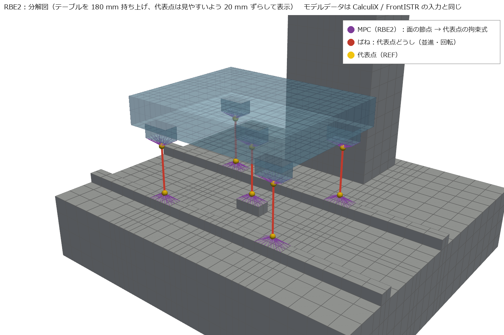

← docs 目次 ｜ ⌂ トップ ｜ ← 前: ref000 オープンソースマルチフィジックス総覧 ｜ 次: ref006 6.0の変更点と5.9との比較 →
作成: 2026-11-07 対象: CalculiX 2.21、FrontISTR 6.0（5.9 でも同じ結果。違いは ref006）
「✅ 実行確認」は ana001〜003 で実際に動かして結果を確かめたもの。それ以外はマニュアル・ソースで確認したもの。
| やりたいこと | CalculiX | FrontISTR |
|---|---|---|
| 節点と地面の間のばね | SPRING1 要素 ＋ *SPRING |
!SPRING（cnt、要素不要）。マニュアル上は静解析と陰解法の動解析で使える |
| 2節点間、方向を指定したばね（変形に追従しない） | ✅ SPRING2 要素 ＋
*SPRING（2行目「自由度1,
自由度2」、3行目「ばね定数」） |
✅ 511 要素（!SECTION, TYPE=INTERFACE）＋
cnt の !SPRING_D（「自由度1, 自由度2, ばね定数」） |
| 2節点間、節点を結ぶ線の方向のばね | SPRINGA 要素（長さ 0 は不可） |
511 要素 ＋ !SPRING_A |
| 非線形ばね（力−変位の表） | *SPRING, NONLINEAR |
― |
| ダッシュポット（減衰器） | DASHPOTA 要素 ＋ *DASHPOT |
511 要素 ＋ !DASHPOT_D /
!DASHPOT_A |
| 固有値解析でばねが効くか | ✅ 効く | ✅ 効く（マニュアルに明記なし。ana001 で確認） |
| ばね定数の書き方の注意 | 1つの *SPRING に値は 1つ → 値ごとに ELSET を分ける |
値ごとに材料を分ける。cnt の !MATERIAL
名はメッシュ側にも同名の材料が必要（無いと
Fail in read in material definition） |
3 種類のばねを、立方体（1 辺 100 mm の鋼、8 節点六面体 1 個）の最小モデルで CalculiX と FrontISTR の両方で実際に解いた（analysis/ana004）。 ばね定数はすべて \(k = 1000\) N/mm（= 1 N/µm）、4 本で 1000 N を受けるので、手計算は \(u = F/(4k) = 0.25\) mm。
| ケース | ばね | 理論値 [mm] | CalculiX [mm] | FrontISTR [mm] |
|---|---|---|---|---|
| A_ground | 地面ばね（SPRING1 / !SPRING） | -0.2500 | -0.2500 | -0.2500 |
| B_spring2 | 2節点・方向指定（SPRING2 / 511+!SPRING_D） | 0.2500 | 0.2500 | 0.2500 |
| C_springa | 2節点・軸方向（SPRINGA / 511+!SPRING_A） | -0.2500 | -0.2500 | -0.2500 |
3 ケースとも、両ソルバが手計算と一致した（A の −0.25005 は立方体自体の縮み 0.00005 mm を含む）。
図は ParaView と同じ VTK ライブラリ（pyvista）で描いた。左 = 設定（赤 = ばね、黄 = 荷重、水色 = 固定点）、右 = CalculiX の結果（変形を 100 倍に拡大、色 = 変位の大きさ）。
CalculiX（model.inp）:
1 節点の要素 SPRING1
を作り、*SPRING で自由度と値を与える。
*ELEMENT, TYPE=SPRING1, ELSET=GS3 ← 1 節点の要素（相手は地面）
200, 1 ← 要素番号, 節点
201, 2
202, 3
203, 4
*SPRING, ELSET=GS3
3 ← 効かせる自由度（3 = Z）。1 つだけ書ける
1000.0 ← ばね定数 [N/mm]X・Y・Z の 3 方向に入れるなら、ELSET を 3 つ（GS1, GS2, GS3）作って同じことを繰り返す。
FrontISTR（model.cnt）:
要素は不要。解析制御ファイル（cnt）に
!SPRING を書くだけ。
!SPRING
SPRN, 1, 1000.0 ← 節点グループ（または節点番号）, 自由度, ばね定数
SPRN, 2, 1000.0
SPRN, 3, 1000.0SPRN はメッシュファイル（msh）の
!NGROUP, NGRP=SPRN で定義した節点グループ（下面 4
節点）。
工作機械のガイド・ボールねじのように、同じ位置にある 2 つの節点（レール側とキャリッジ側）を方向ごとのばねでつなぐ。ana001〜003 で使っている方式。 （図では、ばねが見えるように上の立方体を 40 mm 持ち上げて描いている。実際は長さ 0）

CalculiX（model.inp）:
2 節点の要素 SPRING2。*SPRING
の 2 行目に「節点 1 側の自由度, 節点 2 側の自由度」。
*ELEMENT, TYPE=SPRING2, ELSET=S2_1
200, 5, 11 ← 要素番号, 下の立方体の節点, 上の立方体の節点
201, 6, 12
202, 7, 13
203, 8, 14
*SPRING, ELSET=S2_1
1, 1 ← 節点 1 の X と 節点 2 の X をつなぐ
1000.0Y・Z も同じように ELSET を分けて書く（1 つの *SPRING
には自由度の組と値が 1 つずつ）。
FrontISTR: メッシュ（msh）に 511 要素と「ダミー材料」、制御（cnt）にばねの値を書く（2 ファイルに分かれる）。
（model.msh）
!ELEMENT, TYPE=511, EGRP=ESPR ← 2 節点のばね（インターフェース）要素
200, 5, 11
201, 6, 12
202, 7, 13
203, 8, 14
!MATERIAL, NAME=SPMAT, ITEM=1 ← ダミー材料（cnt と同じ名前が msh に無いとエラー）
!ITEM=1, SUBITEM=2
1.0, 0.3
!SECTION, TYPE=INTERFACE, EGRP=ESPR, MATERIAL=SPMAT
（model.cnt）
!MATERIAL, NAME=SPMAT
!SPRING_D ← 方向指定のばね
1, 1, 1000.0 ← 節点 1 の自由度, 節点 2 の自由度, ばね定数
2, 2, 1000.0 ← 1 つの材料に X・Y・Z をまとめて書ける
3, 3, 1000.0ばねの向きを自由度で指定せず、2 つの節点を結ぶ線の向きに効かせる（コイルばね・棒のようなもの）。長さ 0 は不可。

CalculiX（model.inp）:
*ELEMENT, TYPE=SPRINGA, ELSET=SA
200, 5, 11 ← z=100 と z=150 の節点（長さ 50 mm）
...
*SPRING, ELSET=SA
← 2 行目は空行（向きは節点の位置で決まる）
1000.0FrontISTR（msh は B と同じ 511 要素＋ダミー材料）:
!MATERIAL, NAME=SPMAT
!SPRING_A ← 軸方向のばね
1000.0 ← ばね定数だけこの種類は線と直角な向きには抵抗しないので、このモデルでは上の立方体の X・Y を拘束した（拘束しないと横にずれて解けない）。
| 種類 | 工作機械での使いどころ |
|---|---|
| A 地面ばね | 機械を床（基礎・レベリングブロック）に載せる。床側を作らずに済む |
| B 方向指定・長さ 0 | ガイド・ボールねじ・ボルト結合など、面と面の間（向かい合う節点をつなぐ）。ana001〜003 |
| C 軸方向・長さあり | 斜めの支え、ばね・ダンパ部品そのもの、カウンタバランス |
| 代表点＋MPC＋B | 面が細かく分割されていて節点が向かい合わないとき、面の回転剛性も入れたいとき（ana003） |
results/
の
A_ground.vtu・B_spring2.vtu・C_springa.vtu
を ParaView で開く。 ばねは線（VTK_LINE）の要素、変位は
DISPLACEMENT として入れてある。
.vtu を開き、ApplyDISPLACEMENT、Scale
Factor = 100）DISPLACEMENT（Magnitude）にする。カラーマップは既定の Cool
to Warmkind = 1（立方体は
0）生成スクリプト: make_and_run.py（入力作成・実行・照合）、render.py（図と VTU）
| やりたいこと | CalculiX | FrontISTR |
|---|---|---|
| 線形の拘束式 | ✅ *EQUATION（最初の項が従属自由度） |
✅ !EQUATION（メッシュファイル。2行目「項数,
定数」） |
| 剛体結合（RBE2 相当） | *RIGID BODY, NSET=…, REF NODE=…, ROT NODE=…、*COUPLING
＋ *KINEMATIC |
専用機能なし → ✅ 標準の
!EQUATION（線形拘束式）を、剛体の式から係数を計算して並べる（自作スクリプトで生成、ソルバの改造なし。ana003） |
| 平均結合（RBE3 相当） | *COUPLING ＋ *DISTRIBUTING |
専用機能なし → ✅ 同上（重み付き平均の式を !EQUATION
で書く。ana003） |
| 回転のばね | ROT NODE の並進自由度を回転として使う（*RIGID BODY
の仕組みと同じ） |
✅ 補助節点の並進自由度を回転として使う（ana003） |
| 面どうしを固着 | *TIE |
!CONTACT の TIED |
| 接触（ペナルティ） | *CONTACT PAIR ＋
*SURFACE BEHAVIOR（線形の圧力−食い込みで「面ばね」にもなる） |
!CONTACT（静解析・動解析） |
代表点＋MPC の図（ana003 のモデル。CalculiX・FrontISTR に渡したのと同じ節点・拘束式・ばねのデータから描いたもの）:

紫の細線 = 拘束式（面の節点 → 代表点）、赤 = 代表点どうしのばね、黄 = 代表点。テーブルを 180 mm 持ち上げた分解図。 生成スクリプト: make_mpc_figs.py。詳しくは ana003
| 項目 | CalculiX | FrontISTR |
|---|---|---|
| キーワード | ✅ *FREQUENCY（2行目にモード数） |
✅ !SOLUTION, TYPE=EIGEN ＋
!EIGEN（モード数, 収束判定, 最大反復） |
| 解法 | ARPACK（Lanczos 系）＋ SPOOLES | Lanczos 法 |
| 結果 | .dat（固有振動数・刺激係数）、.frd（モード形状） |
0.log（固有振動数・刺激係数）、.res、VTK（!WRITE,VISUAL） |
| 次の周波数応答に渡す | STORAGE=YES |
0.log と .res を次の解析で読む |
| 項目 | CalculiX | FrontISTR |
|---|---|---|
| キーワード | ✅ *STEADY STATE DYNAMICS（下限, 上限, 点数,
偏り） |
✅ !SOLUTION, TYPE=DYNAMIC ＋
!DYNAMIC（2行目 11, 2） |
| 解法 | モード重ね合わせ（同じ入力ファイル内で固有値ステップの後に書く） | モード重ね合わせ（固有値解析を別に流し、!EIGENREAD
でログを指定、全体制御で result-in に結果ファイル） |
| 加振力 | *CLOAD（実部）。複素数は LOAD CASE=2 |
!FLOAD, LOAD CASE=1（実部）/
2（虚部） |
| 出力 | *NODE PRINT（各周波数の実部・虚部）、*NODE FILE |
0.log にモニタ節点の振幅、可視化用 VTK |
| 計算点 | 固有振動数の間ごとに N 点（ピーク付近が細かい） | 下限〜上限を等間隔に N 点 |
| 方法 | CalculiX | FrontISTR |
|---|---|---|
| モード減衰比（直接 \(\zeta\)） | *MODAL DAMPING（モード範囲ごとに \(\zeta\)） |
×（周波数応答では Rayleigh のみ） |
| Rayleigh 減衰 | ✅ *MODAL DAMPING, RAYLEIGH（2行目
,,α,β） |
✅ !DYNAMIC の 5行目（1, 1, α, β） |
| 構造減衰（複素剛性） | *DAMPING, STRUCTURAL（材料） |
― |
| ダッシュポット | DASHPOTA（直接法・時刻歴） |
!DASHPOT_D / !DASHPOT_A（時刻歴） |
| 要素 | CalculiX | FrontISTR | 節点の順番 |
|---|---|---|---|
| 20節点六面体 | ✅ C3D20（低減積分 C3D20R） |
✅ 362 |
同じ（角 1〜8、下面の辺 9〜12、上面の辺 13〜16、縦の辺 17〜20） |
| 8節点六面体 | C3D8、C3D8I（非適合モードで曲げに強い） |
361（!ELEMOPT で積分方法を選べる） |
同じ |
| 10節点四面体 | C3D10 |
342 |
― |
| CalculiX | FrontISTR | |
|---|---|---|
| 入れやすさ | apt パッケージあり（権限がなくても展開して使える） | ソースからビルド（cmake、Fortran、BLAS/LAPACK が必要） |
| 入力 | 1 ファイルに全部（Abaqus に近い） | メッシュ・制御・全体制御の 3 ファイル。解析ごとに全体制御を切り替える |
| 日本語の情報 | 少ない | マニュアルが日本語 |
| 減衰の自由度 | 高い（モード減衰を直接入れられる） | 周波数応答は Rayleigh のみ |
| 大規模・並列 | OpenMP | MPI 並列が得意（今回は逐次版） |
| 結果 | ana001〜003 の範囲では両者一致（固有振動数の差 0.3 % 以内、FRF もほぼ一致） | 同左 |
← docs 目次 ｜ ⌂ トップ ｜ ← 前: ref000 オープンソースマルチフィジックス総覧 ｜ 次: ref006 6.0の変更点と5.9との比較 →